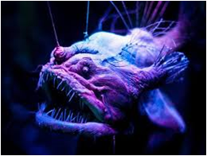
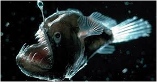
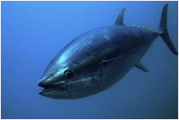
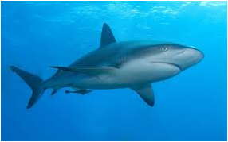
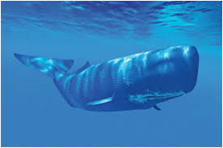

Materiais provenientes do fundo oceânico
Ainda há muito para conhecer sobre as espécies que vivem no fundo dos oceanos (muitas delas endémicas), em condições extremas de ausência de luz (luz solar penetra até 200 m no máximo) e pressões muito elevadas (100 atm a 1000 m)


Alteração dos habitats dos fundos oceânicos: afecta a biodiversidade e os ecosistemas



Ruído e vibrações e fugas de combustível ou de produtos tóxicos causadas pelo equipamento e navios de exploração : afectam algumas espécies, tais como as baleias, os atuns, os tubarões